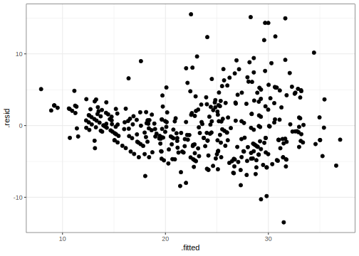
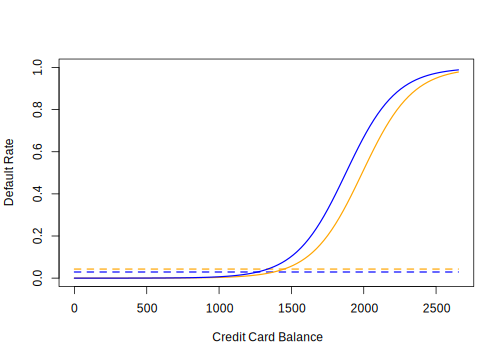

27 Linear models for classification
The general classification setting is: can we predict categorical response/output \(Y\), from set of predictors \(X_1,X_2,\ldots,X_p\)? As in the regression case, we assume training data \((\mathbf{x}_1, y_1), \ldots, (\mathbf{x}_n, y_n)\). In this case, however, responses \(y_i\) are categorical and take one of a fixed set of values.


27.1 An example classification problem
An individual’s choice of transportation mode to commute to work. Predictors: income, cost and time required for each of the alternatives: driving/carpooling, biking, taking a bus, taking the train. Response: whether the individual makes their commute by car, bike, bus or train.
From a classification model based on this data we could perform an inference task: how do people value price and time when considering their transportation choice.
27.2 Why not linear regression?
In our previous unit we learned about linear regression. Why can’t we use linear regression in the classification setting. For categorical responses with more than two values, if order and scale (units) don’t make sense, then it’s not a regression problem
\[ Y = \begin{cases} 1 & \textrm{if } \mathtt{stroke} \\ 2 & \textrm{if } \mathtt{drug overdose} \\ 3 & \textrm{if } \mathtt{epileptic seizure} \end{cases} \]
For binary responses, it’s a little better:
\[ Y = \begin{cases} 0 & \textrm{if } \mathtt{stroke} \\ 1 & \textrm{if } \mathtt{drug overdose} \\ \end{cases} \]
We could use linear regression in this setting and interpret response \(Y\) as a probability (e.g, if \(\hat{y} > 0.5\) predict \(\mathtt{drug overdose}\))

27.3 Classification as probability estimation problem
This observation motivates how we will address the classification problem in general. Instead of modeling classes 0 or 1 directly, we will model the conditional class probability \(p(Y=1|X=x)\), and classify based on this probability. In general, classification approaches use discriminant (think of scoring) functions to do classification. Logistic regression is one way of estimating the class probability \(p(Y=1|X=x)\) (also denoted \(p(x)\))

27.4 Logistic regression
The basic idea behind logistic regression is to build a linear model related to \(p(x)\), since linear regression directly (i.e. \(p(x) = \beta_0 + \beta_1 x\)) doesn’t work. Why?
Instead we build a linear model of log-odds:
\[ \log \frac{p(x)}{1-p(x)} = \beta_0 + \beta_1 x \]
Odds are equivalent to ratios of probabilities. For example, “two to one odds that Serena Williams wins the French Open” means “the probability that Serena Williams wins the French Open is double the probability he loses”. So, if odds = 2, \(p(x)=2/3\). If odds = 1/2, \(p(x)=1/3\). In general odds = \(\frac{p(x)}{1-p(x)}\).
27.4.1 Exercises
Suppose an individual has a 16% chance of defaulting on their credit card payment. What are the odds that she will default?
On average, what fraction of people with an odds of 0.37 of defaulting on their credit card payment will in fact default?

Here is how we compute a logistic regression model in R
library(ISLR)
library(dplyr)
library(broom)
library(ggplot2)
data(Default)
default_fit <- glm(default ~ balance, data=Default, family=binomial)
default_fit %>%
tidy() %>%
knitr::kable(digits=4)| term | estimate | std.error | statistic | p.value |
|---|---|---|---|---|
| (Intercept) | -10.6513 | 0.3612 | -29.4922 | 0 |
| balance | 0.0055 | 0.0002 | 24.9531 | 0 |
Interpretation of logistic regression models is slightly different than the linear regression model we looked at. In this case, the odds that a person defaults increase by \(e^{0.05} \approx 1.051\) for every dollar in their account balance. As before, the accuracy of \(\hat{\beta}_1\) as an estimate of the population parameter is given its standard error. We can again construct a confidence interval for this estimate as we’ve done before.
As before, we can do hypothesis testing of a relationship between account balance and the probability of default. In this case, we use a \(Z\)-statistic \(\frac{\hat{\beta}_1}{\mathrm{SE}(\hat{\beta}_1)}\) which plays the role of the t-statistic in linear regression: a scaled measure of our estimate (signal / noise). As before, the P-value is the probability of seeing a Z-value as large (e.g., 24.95) under the null hypothesis that there is no relationship between balance and the probability of defaulting, i.e., \(\beta_1=0\) in the population.
In accordance to the “inverse problem” view we’ve been developing in class, we require an algorithm required to estimate parameters \(\beta_0\) and \(\beta_1\) according to a data fit criterion. In logistic regression we use the Bernoulli probability model we saw previously (think of flipping a coin weighted by \(p(x)\)), and estimate parameters to maximize the likelihood of the observed training data under this coin flipping (binomial) model. I.e.: solve the following optimization problem
\[ \max_{\beta_0, \beta_1} \sum_{i:\, y_i=1} log(p(x_i)) + \sum_{i: y_i=0} log(1-p(x_i)) \]
This is a non-linear (but convex) optimization problem. You can learn algorithms to solve it in “Computational Methods” class (CMSC 460)
27.4.2 Making predictions
We can use a learned logistic regression model to make predictions. E.g., “on average, the probability that a person with a balance of $1,000 defaults is”:
\[ \hat{p}(1000) = \frac{e^{\hat{\beta}_0 + \hat{\beta}_1 \times 1000}}{1+e^{\beta_0 + \beta_1 \times 1000}} \approx \frac{e^{-10.6514 + 0.0055 \times 1000}}{1+e^{-10.6514 + 0.0055 \times 1000}} \\ \approx 0.00576 \]
27.4.3 Multiple logistic regression
This is a classification analog to linear regression:
\[ \log \frac{p(\mathbf{x})}{1-p(\mathbf{x})} = \beta_0 + \beta_1 x_1 + \cdots + \beta_p x_p \]
fit <- glm(default ~ balance + income + student, data=Default, family="binomial")
fit %>%
tidy() %>%
knitr::kable(digits=4)| term | estimate | std.error | statistic | p.value |
|---|---|---|---|---|
| (Intercept) | -10.8690 | 0.4923 | -22.0801 | 0.0000 |
| balance | 0.0057 | 0.0002 | 24.7376 | 0.0000 |
| income | 0.0000 | 0.0000 | 0.3698 | 0.7115 |
| studentYes | -0.6468 | 0.2363 | -2.7376 | 0.0062 |
As in multiple linear regression it is essential to avoid confounding!. Consider an example of single logistic regression of default vs. student status:
fit1 <- glm(default ~ student, data=Default, family="binomial")
fit1 %>% tidy() %>%
knitr::kable(digits=4)| term | estimate | std.error | statistic | p.value |
|---|---|---|---|---|
| (Intercept) | -3.5041 | 0.0707 | -49.5542 | 0e+00 |
| studentYes | 0.4049 | 0.1150 | 3.5202 | 4e-04 |
and a multiple logistic regression:
fit2 <- glm(default ~ balance + income + student, data=Default, family="binomial")
fit2 %>% tidy() %>%
knitr::kable(digits=4)| term | estimate | std.error | statistic | p.value |
|---|---|---|---|---|
| (Intercept) | -10.8690 | 0.4923 | -22.0801 | 0.0000 |
| balance | 0.0057 | 0.0002 | 24.7376 | 0.0000 |
| income | 0.0000 | 0.0000 | 0.3698 | 0.7115 |
| studentYes | -0.6468 | 0.2363 | -2.7376 | 0.0062 |


27.4.4 Exercise
- Suppose we collect data for a group of students in a statistics class with variables X1 = hours studied, X2 = undergrad GPA, and Y = receive an A. We fit a logistic regression and produce estimated coefficients, \(\hat{\beta}_0=-6, \hat{\beta}_1=0.05,\hat{\beta}_2=1\).
Estimate the probability that a student who studies for 40h and has an undergraduate GPA of 3.5 gets an A in the class.
- With estimated parameters from previous question, and GPA of 3.5 as before, how many hours would the student need to study to have a 50% chance of getting an A in the class?
27.5 Linear Discriminant Analysis
Linear Discriminant Analysis (LDA) is a different linear method to estimate a probability model used for classification. Recall that we want to partition data based on class probability: e.g., find the \(\mathbf{X}\) for which \(P(\mathrm{default=Yes}|X) > P(\mathrm{default=No}|X)\). In logistic regression, we made no assumption about \(\mathbf{X}\). In other cases, we can make assumptions about \(\mathbf{X}\) that improve prediction performance (if assumptions hold, obviously)

This suggests we can model balance for each of the classes with a normal distribution. WARNING, BIG ASSUMPTION: We will assume balance has the same variance for both classes (this is what makes LDA linear).
So, we estimate average balance for people who do not default:
\[ \hat{\mu}_0 = \frac{1}{n_0} \sum_{i:\, y_i=0} x_i \]
for people who do default:
\[ \hat{\mu}_1 = \frac{1}{n_1} \sum_{i:\, y_i=1} x_i \]
and estimate variance for both classes as
\[ \hat{\sigma}^2 = \frac{1}{n-2} \sum_{k=1,2} \sum_{i:\, y_i=k} (x_i - \hat{\mu}_k)^2 \]
## # A tibble: 2 x 2
## default balance_mean
## <fct> <dbl>
## 1 No 804.
## 2 Yes 1748.## # A tibble: 1 x 1
## balance_sd
## <dbl>
## 1 453.We can “score” values of balance based on these estimates:
\[ f_k(x) = \frac{1}{\sqrt{2\pi}\sigma} \exp \left(-\frac{1}{2\sigma^2} (x-\mu_k)^2 \right) \]
Remember, what we want is posterior class probability \(p(Y=k|X)\), for that we need to include the probability that we observe class \(k\). This is called prior class probability, denoted \(\pi_k\), means the proportion of times you expect people to default regardless of any other attribute. We can estimate from training data as the proportion of observations with label \(k\). Bayes’ Rule (or Theorem) gives us a way of computing \(P(Y=k|X)\) using score \(f_k(x)\) (from the class normal assumption) and prior \(\pi_k\):
\[ P(Y=k|X) = \frac{f_k(x) \pi_k}{\sum_l f_l(x) \pi_l} \]
If data (conditioned by class) is distributed so that \(f_k\) is the right probability function to use, then predicting the class that maximizes \(P(Y=k|X)\) is the optimal thing to do. This is referred to the Bayes classifier (aka the Holy Grail of classification)
27.5.1 How to train LDA
Compute class means and squared error based on class mean
lda_stats <- Default %>%
group_by(default) %>%
mutate(class_mean=mean(balance),
squared_error=(balance-class_mean)^2) Compute class sizes and sum of squared errors
lda_stats <- lda_stats %>%
summarize(class_mean=first(class_mean),
class_size=n(),
sum_squares=sum(squared_error))Compute class prior and variance (note same variance for both classes)
lda_stats <- lda_stats %>%
mutate(class_prior=class_size/sum(class_size),
sigma2=sum(sum_squares) / (sum(class_size) - 2)) %>%
dplyr::select(default, class_mean, class_prior, sigma2)
knitr::kable(lda_stats)| default | class_mean | class_prior | sigma2 |
|---|---|---|---|
| No | 803.9438 | 0.9667 | 205318.6 |
| Yes | 1747.8217 | 0.0333 | 205318.6 |
How do we predict with LDA? Predict Yes if \(P(Y=1|X) > P(Y=0|X)\)
Equivalently:
\[ \log{\frac{P(Y=1|X)}{P(Y=0|X)}} > 0 \Rightarrow \\ \log f_1(x) + \log \pi_1 > \log f_0(x) + \log \pi_0 \]
This turns out to be a linear function of \(x\)!
lda_log_ratio <- function(balance, lda_stats) {
n <- length(balance)
# subtract class mean
centered_balance <- rep(balance, 2) - rep(lda_stats$class_mean, each=n)
# scale by standard deviation
scaled_balance <- centered_balance / sqrt(lda_stats$sigma2[1])
# compute log normal density and add log class prior
lprobs <- dnorm(scaled_balance, log=TRUE) + log(rep(lda_stats$class_prior, each=n))
# compute log ratio of class probabilities
lprobs <- matrix(lprobs, nc=2)
colnames(lprobs) <- lda_stats$default
lprobs[,"Yes"] - lprobs[,"No"]
}test_balance <- seq(0, 3000, len=100)
plot(test_balance, lda_log_ratio(test_balance, lda_stats),
type="l", xlab="Balance", ylab="Log Probability Ratio", cex=1.4)27.6 Classifier evaluation
How do we determine how well classifiers are performing? One way is to compute the error rate of the classifier, the percent of mistakes it makes when predicting class
library(MASS)
lda_fit <- lda(default ~ balance, data=Default)
lda_pred <- predict(lda_fit, data=Default)
print(table(predicted=lda_pred$class, observed=Default$default))## observed
## predicted No Yes
## No 9643 257
## Yes 24 76# error rate
mean(Default$default != lda_pred$class) * 100## [1] 2.81# dummy error rate
mean(Default$default != "No") * 100## [1] 3.33In this case, it would seem that LDA performs well. But in fact, we can get similar error rate by always predicting “no default”. We can see from this table that LDA errors are not symmetric. It’s most common error is that it misses true defaults.
We need a more precise language to describe classification mistakes:
| True Class + | True Class - | Total | |
|---|---|---|---|
| Predicted Class + | True Positive (TP) | False Positive (FP) | P* |
| Predicted Class - | False Negative (FN) | True Negative (TN) | N* |
| Total | P | N |
Using these we can define statistics that describe classifier performance
| Name | Definition | Synonyms |
|---|---|---|
| False Positive Rate (FPR) | FP / N | Type-I error, 1-Specificity |
| True Positive Rate (TPR) | TP / P | 1 - Type-II error, power, sensitivity, recall |
| Positive Predictive Value (PPV) | TP / P* | precision, 1-false discovery proportion |
| Negative Predicitve Value (NPV) | FN / N* |
In the credit default case we may want to increase TPR (recall, make sure we catch all defaults) at the expense of FPR (1-Specificity, clients we lose because we think they will default)
This leads to a natural question: Can we adjust our classifiers TPR and FPR?
Remember we are classifying Yes if
\[ \log \frac{P(Y=\mathtt{Yes}|X)}{P(Y=\mathtt{No}|X)} > 0 \Rightarrow \\ P(Y=\mathtt{Yes}|X) > 0.5 \]
What would happen if we use \(P(Y=\mathtt{Yes}|X) > 0.2\)?
library(ROCR)
pred <- prediction(lda_pred$posterior[,"Yes"], Default$default)
layout(cbind(1,2))
plot(performance(pred, "tpr"))
plot(performance(pred, "fpr"))
A way of describing the TPR and FPR tradeoff is by using the ROC curve (Receiver Operating Characteristic) and the AUROC (area under the ROC)
auc <- unlist(performance(pred, "auc")@y.values)
plot(performance(pred, "tpr", "fpr"),
main=paste("LDA AUROC=", round(auc, 2)),
lwd=1.4, cex.lab=1.7, cex.main=1.5)Consider comparing an LDA model using all predictors in the dataset.
full_lda <- lda(default~., data=Default)
full_lda_preds <- predict(full_lda, Default)
pred_list <- list(
balance_lda = lda_pred$posterior[,"Yes"],
full_lda = full_lda_preds$posterior[,"Yes"],
dummy = rep(0, nrow(Default)))
pred_objs <- lapply(pred_list,
prediction, Default$default)
aucs <- sapply(pred_objs,
function(x) unlist(
performance(x, "auc")@y.values))
roc_objs <- lapply(pred_objs,
performance, "tpr", "fpr")for (i in seq(along=roc_objs)) {
plot(roc_objs[[i]], add = i != 1, col=i,
lwd=3, cex.lab=1.5)
}
legend("bottomright",
legend=paste(gsub("_", " ", names(pred_list)), "AUROC=",round(aucs, 2)),
col=1:3, lwd=3, cex=2)Another metric that is frequently used to understand classification errors and tradeoffs is the precision-recall curve:
library(caTools)
pr_objs <- lapply(pred_objs,
performance, "prec", "rec")
for (i in seq(along=pr_objs)) {
plot(pr_objs[[i]], add = i != 1, col=i,
lwd=3, cex.lab=1.5)
}
legend("bottomleft",
legend=paste(gsub("_", " ", names(pred_list))),
col=1:3, lwd=3, cex=2)27.7 Summary
We approach classification as a class probability estimation problem. Logistic regression and LDA partition predictor space with linear functions. Logistic regression learns parameter using Maximum Likelihood (numerical optimization), while LDA learns parameter using means and variances (and assuming normal distribution)
Error and accuracy statistics are not enough to understand classifier performance. Classifications can be done using probability cutoffs to trade, e.g., TPR-FPR (ROC curve), or precision-recall (PR curve). Area under ROC or PR curve summarize classifier performance across different cutoffs.